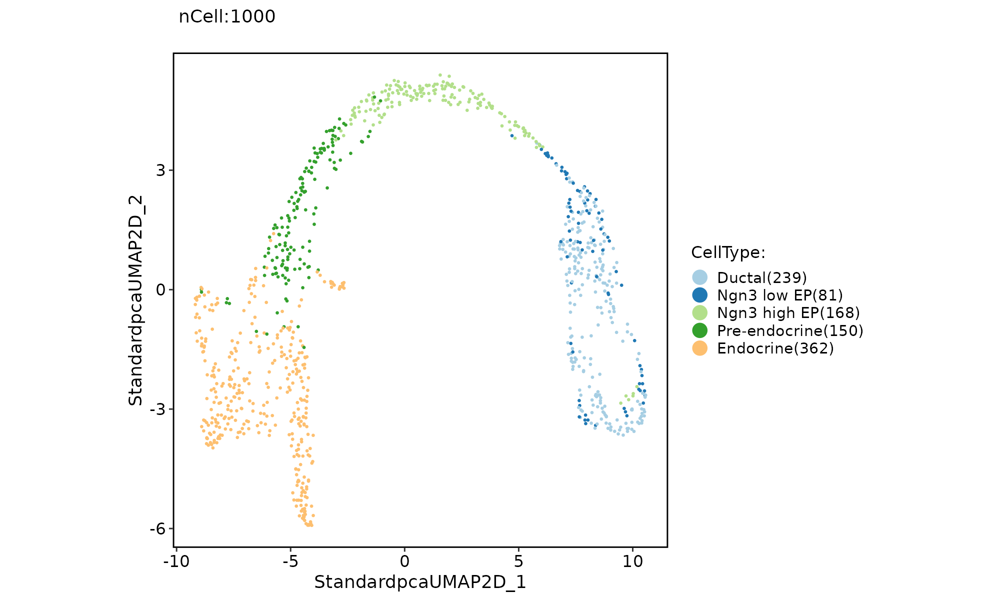

Single cell pipeline for the single dataset.
Usage
Standard_SCP(
srt,
prefix = "Standard",
assay = "RNA",
do_normalization = NULL,
normalization_method = "LogNormalize",
do_HVF_finding = TRUE,
HVF_method = "vst",
nHVF = 2000,
HVF = NULL,
do_scaling = TRUE,
vars_to_regress = NULL,
regression_model = "linear",
linear_reduction = "pca",
linear_reduction_dims = 100,
linear_reduction_dims_use = NULL,
linear_reduction_params = list(),
force_linear_reduction = FALSE,
nonlinear_reduction = "umap",
nonlinear_reduction_dims = c(2, 3),
nonlinear_reduction_params = list(),
force_nonlinear_reduction = TRUE,
do_cluster_finding = TRUE,
cluster_algorithm = "louvain",
cluster_resolution = 0.6,
cluster_reorder = TRUE,
seed = 11
)Arguments
- srt
A
Seuratobject.- prefix
The prefix used to name the result.
- do_normalization
Whether to normalize the data. If NULL, will automatically determine.
- normalization_method
Normalization method.Can be one of "LogNormalize", "SCT".
- do_HVF_finding
Whether to find the high variable features(HVF). If NULL, will automatically determine.
- nHVF
HVF number to use.
- HVF
Custom high variable features.
- do_scaling
Whether to scale the data. If NULL, will automatically determine.
- vars_to_regress
Variables to regress out.
- regression_model
Use a linear model or generalized linear model (poisson, negative binomial) for the regression. Options are "linear" (default), "poisson", and "negbinom".
- linear_reduction
linear reduction method name. Can be one of "pca", "ica", "nmf", "mds", "glmpca".
- linear_reduction_dims
Dimensions to calculate when performing linear reduction.
- linear_reduction_dims_use
Which dimensions to use when performing the nonlinear reduction.
- nonlinear_reduction
Non-linear reduction method name. Can be one of "umap", "umap-naive", "tsne", "dm", "phate", "pacmap", "trimap", "largevis".
- nonlinear_reduction_dims
Dimensions to calculate when performing non-linear reduction.
- cluster_algorithm
Algorithm for modularity optimization when finding clusters. Can be one of "louvain", "slm", "leiden".
- cluster_resolution
Cluster resolution parameter.
- cluster_reorder
Whether to reorder the cluster names using hierarchical clustering.
- seed
Set a random seed.
Examples
data("pancreas_sub")
pancreas_sub <- Standard_SCP(srt = pancreas_sub)
#> [2022-12-27 16:23:08] Start Standard_SCP
#> [2022-12-27 16:23:08] Checking srtList... ...
#> Data 1/1 of the srtList is raw counts. Perform NormalizeData(LogNormalize) on the data ...
#> Perform FindVariableFeatures on the data 1/1 of the srtList...
#> Use the separate HVF from the existed HVF in srtList...
#> Number of available HVF: 2000
#> [2022-12-27 16:23:20] Finished checking.
#> [2022-12-27 16:23:20] Perform ScaleData on the data...
#> [2022-12-27 16:23:21] Perform linear dimension reduction (pca) on the data...
#> dims_estimate is 1:18 for 'pca'
#> [2022-12-27 16:23:25] Perform FindClusters (louvain) on the data...
#> [2022-12-27 16:23:25] Reorder clusters...
#> [2022-12-27 16:23:26] Perform nonlinear dimension reduction (umap) on the data...
#> [2022-12-27 16:23:43] Standard_SCP done
#> Elapsed time: 34.74 secs
ClassDimPlot(pancreas_sub, group.by = "CellType")

# Use a combination of different linear or non-linear dimension reduction methods
pancreas_sub <- Standard_SCP(
srt = pancreas_sub,
linear_reduction = c("pca", "ica", "nmf", "mds", "glmpca"),
nonlinear_reduction = "umap"
)
#> [2022-12-27 16:23:44] Start Standard_SCP
#> [2022-12-27 16:23:44] Checking srtList... ...
#> Data 1/1 of the srtList has been log-normalized.
#> Perform FindVariableFeatures on the data 1/1 of the srtList...
#> Use the separate HVF from the existed HVF in srtList...
#> Number of available HVF: 2000
#> [2022-12-27 16:23:46] Finished checking.
#> [2022-12-27 16:23:46] Perform ScaleData on the data...
#> [2022-12-27 16:23:47] Perform linear dimension reduction (pca) on the data...
#> dims_estimate is 1:18 for 'pca'
#> [2022-12-27 16:23:48] Perform FindClusters (louvain) on the data...
#> [2022-12-27 16:23:49] Reorder clusters...
#> [2022-12-27 16:23:49] Perform nonlinear dimension reduction (umap) on the data...
#> [2022-12-27 16:24:02] Perform linear dimension reduction (ica) on the data...
#> dims_estimate is 1:29 for 'ica'
#> [2022-12-27 16:24:06] Perform FindClusters (louvain) on the data...
#> [2022-12-27 16:24:07] Reorder clusters...
#> [2022-12-27 16:24:07] Perform nonlinear dimension reduction (umap) on the data...
#> [2022-12-27 16:24:20] Perform linear dimension reduction (nmf) on the data...
#>
#> Attaching package: ‘Matrix’
#> The following object is masked from ‘package:S4Vectors’:
#>
#> expand
#> dims_estimate is 1:100 for 'nmf'
#> [2022-12-27 16:25:14] Perform FindClusters (louvain) on the data...
#> [2022-12-27 16:25:14] Reorder clusters...
#> [2022-12-27 16:25:15] Perform nonlinear dimension reduction (umap) on the data...
#> [2022-12-27 16:25:28] Perform linear dimension reduction (mds) on the data...
#> dims_estimate is 1:18 for 'mds'
#> [2022-12-27 16:25:41] Perform FindClusters (louvain) on the data...
#> [2022-12-27 16:25:42] Reorder clusters...
#> [2022-12-27 16:25:42] Perform nonlinear dimension reduction (umap) on the data...
#> [2022-12-27 16:25:55] Perform linear dimension reduction (glmpca) on the data...
#> dims_estimate is 1:100 for 'glmpca'
#> [2022-12-27 16:28:36] Perform FindClusters (louvain) on the data...
#> [2022-12-27 16:28:37] Reorder clusters...
#> [2022-12-27 16:28:38] Perform nonlinear dimension reduction (umap) on the data...
#> [2022-12-27 16:28:51] Standard_SCP done
#> Elapsed time: 5.11 mins
pancreas_sub <- Standard_SCP(
srt = pancreas_sub,
linear_reduction = "pca",
nonlinear_reduction = c("umap", "tsne", "dm", "phate", "pacmap", "trimap", "largevis")
)
#> [2022-12-27 16:28:51] Start Standard_SCP
#> [2022-12-27 16:28:51] Checking srtList... ...
#> Data 1/1 of the srtList has been log-normalized.
#> Perform FindVariableFeatures on the data 1/1 of the srtList...
#> Use the separate HVF from the existed HVF in srtList...
#> Number of available HVF: 2000
#> [2022-12-27 16:28:53] Finished checking.
#> [2022-12-27 16:28:53] Perform ScaleData on the data...
#> [2022-12-27 16:28:54] Perform linear dimension reduction (pca) on the data...
#> dims_estimate is 1:18 for 'pca'
#> [2022-12-27 16:28:56] Perform FindClusters (louvain) on the data...
#> [2022-12-27 16:28:57] Reorder clusters...
#> [2022-12-27 16:28:58] Perform nonlinear dimension reduction (umap) on the data...
#> [2022-12-27 16:29:11] Perform nonlinear dimension reduction (tsne) on the data...
#> [2022-12-27 16:29:27] Perform nonlinear dimension reduction (dm) on the data...
#> Warning: as(<dsCMatrix>, "dsTMatrix") is deprecated since Matrix 1.5-0; do as(., "TsparseMatrix") instead
#> [2022-12-27 16:29:31] Perform nonlinear dimension reduction (phate) on the data...
#> Try to install phate ...
#> [2022-12-27 16:30:06] Perform nonlinear dimension reduction (pacmap) on the data...
#> Try to install pacmap ...
#> [2022-12-27 16:30:54] Perform nonlinear dimension reduction (trimap) on the data...
#> Try to install trimap ...
#> [2022-12-27 16:31:23] Perform nonlinear dimension reduction (largevis) on the data...
#> [2022-12-27 16:38:48] Standard_SCP done
#> Elapsed time: 9.95 mins
names(pancreas_sub@reductions)
#> [1] "PCA" "UMAP" "Standardpca" "StandardpcaUMAP2D"
#> [5] "StandardpcaUMAP3D" "StandardUMAP2D" "StandardUMAP3D" "Standardica"
#> [9] "StandardicaUMAP2D" "StandardicaUMAP3D" "Standardnmf" "StandardnmfUMAP2D"
#> [13] "StandardnmfUMAP3D" "Standardmds" "StandardmdsUMAP2D" "StandardmdsUMAP3D"
#> [17] "Standardglmpca" "StandardglmpcaUMAP2D" "StandardglmpcaUMAP3D" "StandardpcaTSNE2D"
#> [21] "StandardpcaTSNE3D" "StandardpcaDM2D" "StandardpcaDM3D" "StandardpcaPHATE2D"
#> [25] "StandardpcaPHATE3D" "StandardpcaPACMAP2D" "StandardpcaPACMAP3D" "StandardpcaTRIMAP2D"
#> [29] "StandardpcaTRIMAP3D" "StandardpcaLARGEVIS2D" "StandardpcaLARGEVIS3D" "StandardTSNE2D"
#> [33] "StandardTSNE3D" "StandardDM2D" "StandardDM3D" "StandardPHATE2D"
#> [37] "StandardPHATE3D" "StandardPACMAP2D" "StandardPACMAP3D" "StandardTRIMAP2D"
#> [41] "StandardTRIMAP3D" "StandardLARGEVIS2D" "StandardLARGEVIS3D"